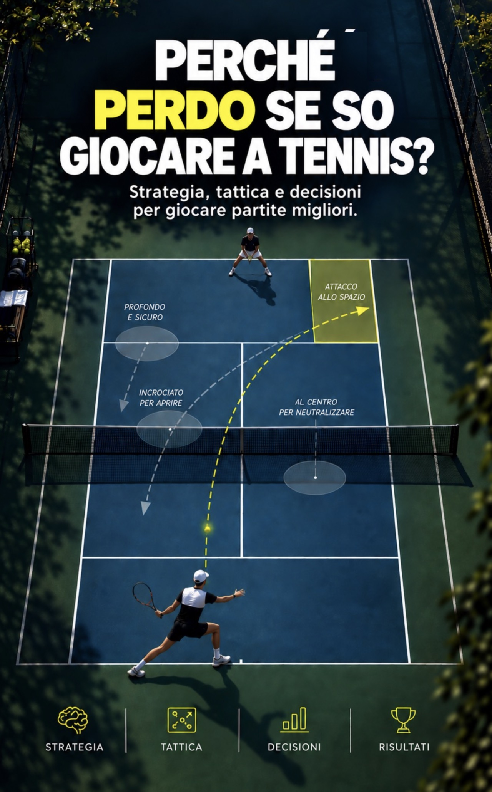
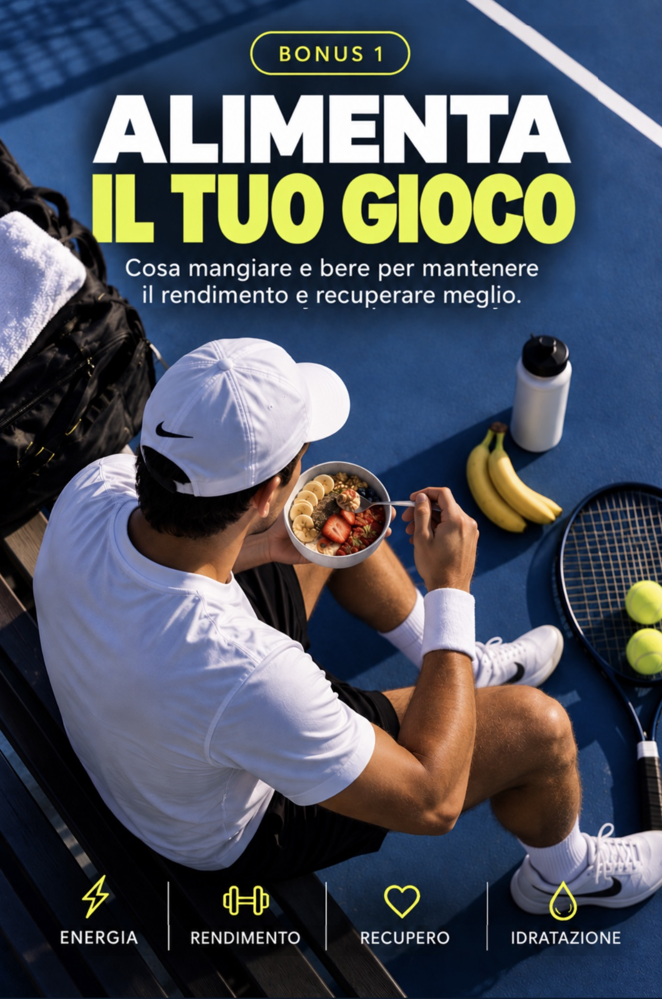
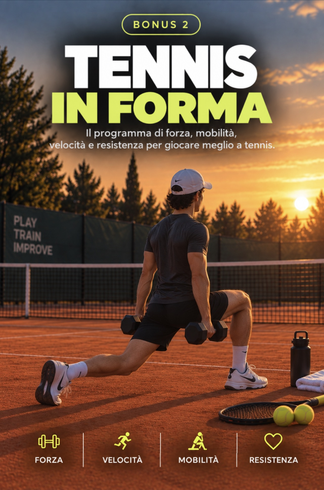
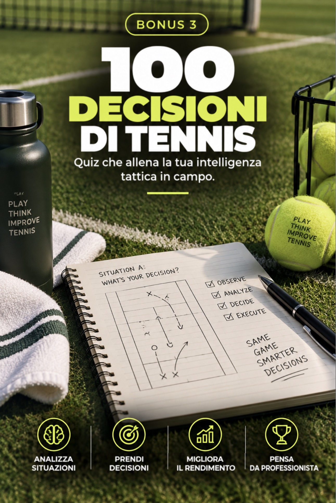

Cerchi il colpo vincente
troppo presto.
Attacchi senza un vantaggio e trasformi una palla neutra in una scelta ad alto rischio.
Non hai bisogno di imparare altri colpi; devi prendere decisioni migliori: capire quando attaccare, quando difendere, dove giocare e come costruire il punto.
01 / QUELLO CHE SUCCEDE IN CAMPO
Conosci quella sensazione: i colpi li hai, ma perdi punti che avresti potuto costruire meglio. E alla fine ti chiedi cosa sia mancato.
Attacchi senza un vantaggio e trasformi una palla neutra in una scelta ad alto rischio.
Scegli lo stesso colpo anche quando la tua posizione, l’avversario e il tempo a disposizione sono cambiati.
Aumenti l’intensità, ma non cambi la direzione, l’altezza o l’intenzione.
Allenare le tue decisioni è un modo per
dare un senso ai colpi che già sai giocare.
02 / QUATTRO DECISIONI CHE COSTANO PUNTI
Quattro situazioni di partita per riconoscere le quattro decisioni che possono costarti punti.
03 / LA TUA GUIDA PER GIOCARE CON CONSAPEVOLEZZA
«Perché perdo se so giocare a tennis?» riunisce strategia, tattica e decisioni per aiutarti a giocare ogni punto con un piano.
Profondità per guadagnare tempo. Direzione per aprire spazio. Altezza per recuperare la posizione. Attacco, difesa e transizione per sapere cosa fare dopo.
04 / SCOPRI LE PAGINE INTERNE
Ogni concetto parte da una situazione reale di gioco: cosa osservare, quale obiettivo cercare e quale decisione prendere.
05 / CAMBIA IL TUO MODO DI LEGGERE IL GIOCO
Non si tratta di colpire più forte o di imparare a giocare a tennis da zero. Si tratta di entrare in campo sapendo cosa fare con ogni palla, come costruire meglio i punti e affrontare la partita con un piano.
06 / DAL PIANO ALL’AZIONE
Una mappa per giocare partite migliori: dal capire il gioco al sapere cosa fare quando cambiano il punto, l’avversario e il punteggio.
07 / COMPLETA LA TUA PREPARAZIONE
Tre bonus per affiancare alla strategia l’energia, la preparazione fisica e l’allenamento delle decisioni.
08 / ESPERIENZE IN CAMPO
Esempi di come la guida può accompagnare l’allenamento e la lettura della partita.
09 / NESSUNA SPEDIZIONE FISICA
Dall’acquisto al tuo dispositivo, in quattro passaggi.
Accedi al checkout e scegli uno dei metodi di pagamento disponibili.
La piattaforma elabora il pagamento e conferma il tuo acquisto.
Consulta la guida e i bonus dal tuo smartphone, tablet o computer.
10 / INIZIA A GIOCARE CON UN PIANO
Porta in campo una nuova domanda:
«Di cosa ha bisogno questo punto?»




(Accesso digitale da smartphone, tablet o computer)
Pagamento unico · accesso digitale
12,90 €
Voglio giocare con più intelligenza11 / PRIMA DEL PROSSIMO PASSO
L’essenziale per scegliere con chiarezza.
Ai tennisti che già giocano e vogliono lavorare sulla strategia, sulla tattica e sulle decisioni in partita. Puoi usarla per ripassare i tuoi criteri di scelta tra un allenamento e l’altro.
L’approccio parte dalle situazioni di gioco. Se sai già giocare degli scambi e conosci i colpi di base, puoi approfondire queste idee e adattarle al tuo livello insieme al tuo allenatore.
Il materiale digitale è pensato per essere consultato da smartphone, tablet e computer.
Sì. Il tuo acquisto è coperto da una garanzia di 7 giorni. Puoi consultare la guida e, se non fa per te, chiedere il rimborso entro questo termine. Il rischio di provarla ce lo assumiamo noi, non tu.
Non sono garantite vittorie. La guida ti invita a migliorare la lettura del gioco e le tue decisioni; i risultati dipendono dalla pratica, dal tuo livello, dalla condizione fisica e dal contesto di ogni partita.
IL PROSSIMO PUNTO INIZIA CON UNA DECISIONE.